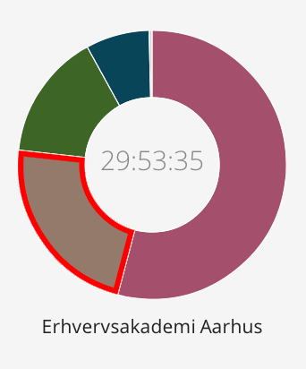
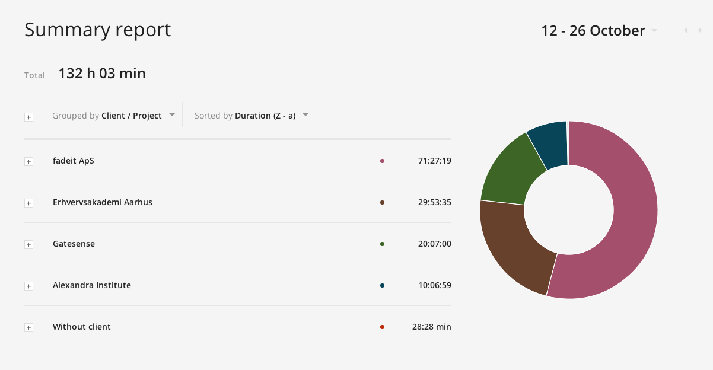

Definitions of Modularity by software developers
compiled by Richard P. Gabriel (2011)On the Criteria To Be Used in Decomposing Systems into Modules
D.L. Parnas (1972)Information distribution aspects of design methodology (info hiding)
D.L. Parnas (1972)The Structure and Value of Modularity in Software Design (EDSM)
Kevin J. Sullivan (2001)Design Rules: The Power of Modularity (DSM - briefly)
Baldwin, C. Y. and Clark, K. B. (2000)Impact of Component Modularity on Design Evolution: Evidence from the Software Industry
Alan MacCormack (2007)Assessing Modularity using Co-Change Clusters
Luciana Lourdes Silva (2014)How to name the module (Conventions?)
How to name the repository on GitHub?
Is the repository name the same name which stands in package.json, component.json?
How to name the bower repository?
How to name the registered bower package?
How should the generated (development and production) file be named?
How to structure the module itself?
How to structure test environment regarding to the module structure?
1) THERE IS NO WAY I can come up with data supporting my boilerplate
2) I still have lots of literature that I initially planned to go through, should I?
3) How should I deal with the fact that Angular 2.0 will be launched in the near future?
4) I can start building my boilerplate and try to disprove it, when should I do it?
...on the other hand I have some doubts about building it at all...
5.) When should I start putting the report together? (just keeping notes atm)